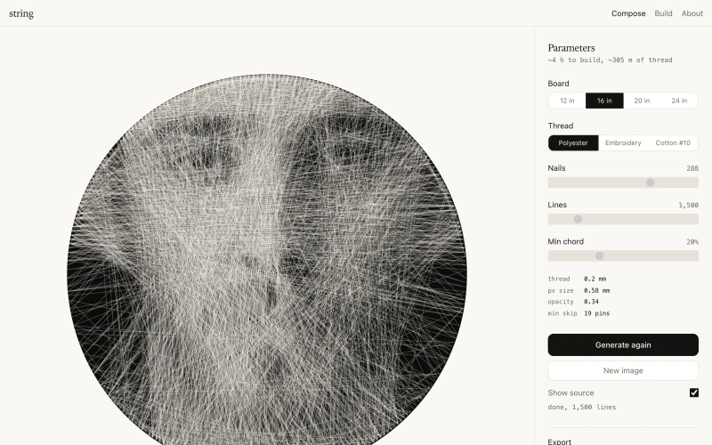
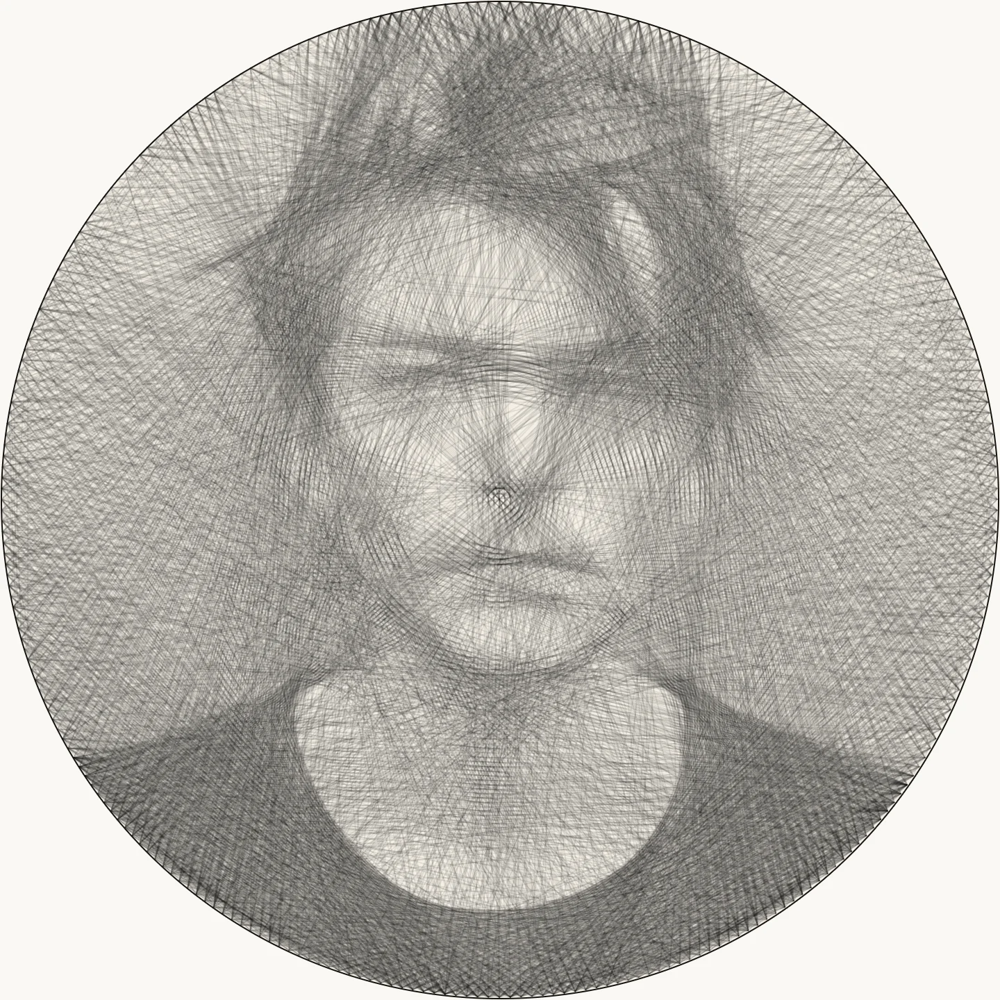
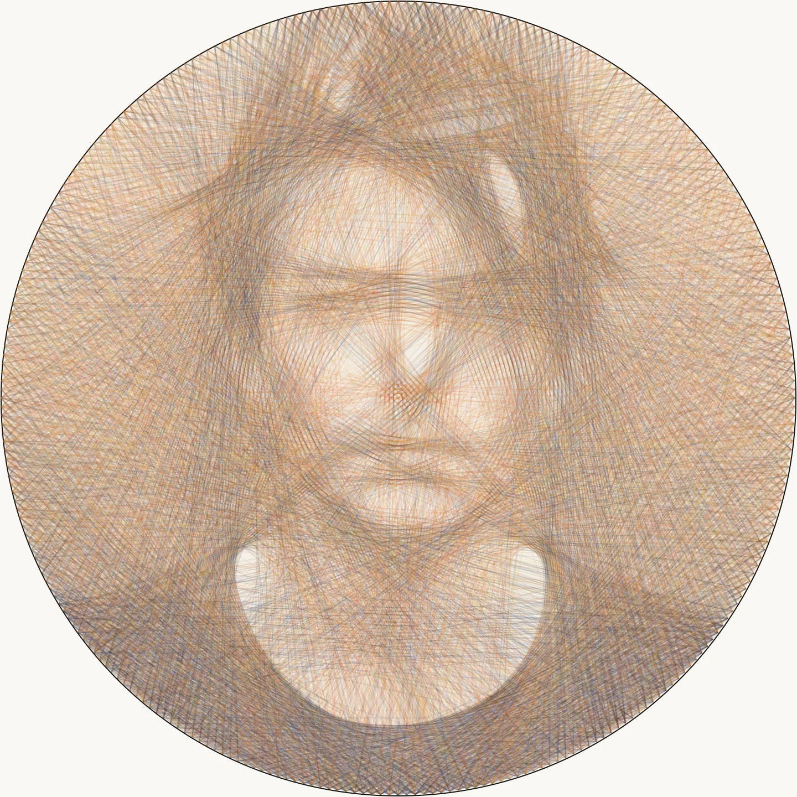
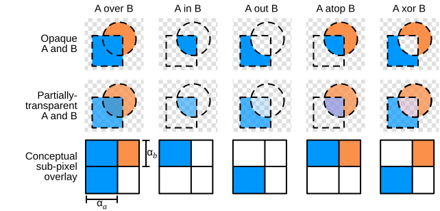
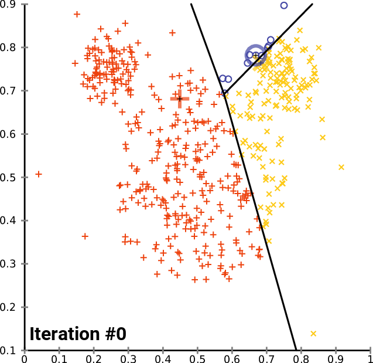
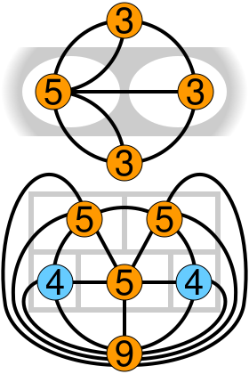
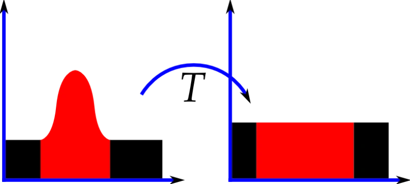

String art is a constrained approximation problem. You have \(n\) pins arranged uniformly on a cream circular board and a palette of \(K\) threads, each darker than the board. The thread runs from pin to pin in straight chords; each chord darkens the pixels it crosses. The goal is to find a sequence of \((\text{pin}, \text{thread color})\) tuples that approximates a target image when superimposed on the bare board. The search space has size \(O((nK)^L)\), where \(L\) is the line budget. Exhaustive search is impossible, so the solver uses a stochastic greedy algorithm with Boltzmann sampling. The cream-board / dark-thread substrate convention follows the original physical setup of Petros Vrellis: every crossing subtracts a little light, never adds it. Mono mode runs with \(K = 1\) (a single near-black thread); color mode supports up to six.
Pin geometry
The \(n\) pins are placed uniformly on a circle of radius \(r\) centered at \((c_x, c_y)\):
\[\mathbf{p}_i = \begin{pmatrix} c_x + r\cos\theta_i \\ c_y + r\sin\theta_i \end{pmatrix}, \qquad \theta_i = \frac{2\pi i}{n} - \frac{\pi}{2}\]The offset of \(-\pi/2\) places pin 0 at 12 o'clock with clockwise numbering. The radius is set to \(r = s/2 - 1.5\) where \(s = 700\) is the solver's internal resolution, leaving a 1.5-pixel margin to avoid boundary artifacts.
Not every pin pair is a valid chord. A minimum chord length prevents short, nearly tangential lines that add density without contributing to the image. Given a minimum chord fraction \(m\) (as a proportion of the diameter), the minimum pin skip is:
\[\text{skip}_{\min} = \left\lceil \frac{n}{2\pi} \cdot 2\arcsin(m) \right\rceil\]This comes from the chord length formula \(\ell = 2r\sin(\Delta\theta/2)\): solving for the angular separation that gives \(\ell \geq 2rm\) and converting to pin count. A ban window of approximately 7% of \(n\) further prevents the thread from backtracking to recently visited pins.
Residual model
In mono mode, the solver maintains a scalar residual field \(R\) over the 700x700 pixel grid. Initially, \(R\) equals the preprocessed luminance image \(I\) subtracted from the board's luminance, so \(R_{xy} \in [0, 1]\) represents the darkness still needed at pixel \((x, y)\). The physical model is cream board plus dark thread: each chord darkens the pixels it crosses, reducing the residual. Color mode replaces this scalar with a 3-channel linear-RGB target/canvas/delta triple - covered later.
When a chord is drawn between pins \(\mathbf{p}_a\) and \(\mathbf{p}_b\), the residual updates as:
\[R_{xy} \leftarrow \max\!\bigl(0,\; R_{xy} - \alpha \cdot C_{xy}\bigr)\]where \(\alpha \in [0.05, 0.5]\) is the thread opacity (derived from the ratio of physical thread diameter to pixel size) and \(C_{xy} \in [0, 1]\) is the antialiased coverage of pixel \((x, y)\) by the chord. The \(\max\) clamp prevents negative residuals from oversaturated regions.
Antialiased rasterization
Coverage \(C_{xy}\) is computed by Xiaolin Wu's line algorithm, which assigns sub-pixel coverage to each pixel the chord touches. For a line with gradient \(g = \Delta y / \Delta x\), the algorithm steps along the major axis and computes the fractional position along the minor axis at each step. Two pixels are lit per step:
\[C_{\lfloor y \rfloor} = 1 - \operatorname{frac}(y), \qquad C_{\lfloor y \rfloor + 1} = \operatorname{frac}(y)\]where \(\operatorname{frac}(y) = y - \lfloor y \rfloor\). The coverage weights sum to 1 at each step, distributing the chord's opacity smoothly across the pixel grid. This avoids the aliasing artifacts that would result from Bresenham rasterization, which matters because thousands of overlapping aliased lines would produce visible moire patterns.
Chord scoring
At each step, the solver evaluates every candidate chord \((\mathbf{p}_{\text{current}}, \mathbf{p}_j)\) and scores it by how much residual it would fulfill, weighted by an optional importance map \(W\):
\[\text{score}(j) = \frac{\displaystyle\sum_{(x,y) \in \text{chord}} R_{xy} \cdot C_{xy} \cdot W_{xy}}{\displaystyle\sum_{(x,y) \in \text{chord}} C_{xy} \cdot W_{xy}}\]This is a weighted average of the residual along the chord, normalized by total weighted coverage. A chord through a bright region of the residual (where the image still needs density) scores high. A chord through an already-saturated region scores near zero. The normalization ensures that long chords and short chords are compared fairly.
Boltzmann sampling
Rather than always choosing the highest-scoring chord (pure greedy), the solver samples the next pin from a Boltzmann distribution over candidate scores. Let \(s_j = \text{score}(j)\) and \(s^* = \max_j s_j\). The selection probability for pin \(j\) is:
\[P(j) = \frac{\exp\!\bigl((s_j - s^*) / T\bigr)}{\displaystyle\sum_k \exp\!\bigl((s_k - s^*) / T\bigr)}\]This is a softmax with temperature \(T\). The subtraction of \(s^*\) is for numerical stability (prevents overflow). The temperature follows a linear annealing schedule:
\[T(t) = T_0 + (T_1 - T_0) \cdot \frac{t}{L}\]where \(t\) is the current step, \(L\) is the line budget, \(T_0 = 0.008\), and \(T_1 = 0.0008\). At \(T_0\), the distribution is broad: multiple high-scoring chords have comparable probability, so the solver explores. As \(T \to T_1\), the distribution sharpens toward the argmax and the solver exploits. This is simulated annealing applied to a sequential construction problem.

{kind=link}
The stochasticity has a practical effect on the output. Pure greedy solving produces images with visible banding (the solver gets locked into locally optimal but globally repetitive patterns). Annealing breaks these patterns by occasionally choosing a slightly suboptimal chord that opens up better options later. The PRNG is ChaCha8, seeded deterministically so identical parameters always produce identical output.
Face-weighted importance
Portraits need more detail in the face than in the background. The solver supports an optional importance map \(W_{xy}\) that biases chord selection toward regions of interest. Given a detected face bounding box with center \((c_x, c_y)\) and half-dimensions \((\sigma_x, \sigma_y)\), the weight field is a 2D anisotropic Gaussian:
\[W_{xy} = 1 + \beta \cdot \exp\!\left(-\frac{1}{2}\left(\frac{(x - c_x)^2}{\sigma_x^2} + \frac{(y - c_y)^2}{\sigma_y^2}\right)\right)\]where \(\beta = 1.5\) is the face emphasis strength and \(\sigma_x = 1.2 \cdot w_{\text{face}}/2\), \(\sigma_y = 1.2 \cdot h_{\text{face}}/2\). Outside the face, \(W \approx 1\) (no bias). At the face center, \(W = 1 + \beta = 2.5\), giving face pixels 2.5x the influence in chord scoring. The smooth Gaussian falloff avoids hard edges in the transition.
Color mode: 3-channel residual


In color mode the solver picks both a chord and a thread color at each step. The scalar luminance residual is replaced by a 3-channel linear-RGB model with three buffers per pixel:
- The target \(\mathbf{T}_{xy}\), the user's image in linear RGB, clipped per channel at the cream-board color so pixels brighter than the substrate contribute no demand (a thread can only darken).
- The simulated canvas \(\mathbf{C}_{xy}\), initialized to the board color and updated by alpha-over compositing each time a chord is deposited.
- The delta \(\boldsymbol{\Delta}_{xy} = \max(\mathbf{C}_{xy} - \mathbf{T}_{xy},\, 0)\), the per-channel darkening still owed at each pixel.
A chord drawn between pins \(\mathbf{p}_a\) and \(\mathbf{p}_b\) with thread color \(\mathbf{t}\) updates the canvas via classic alpha-over compositing in linear RGB:
\[\mathbf{C}_{xy} \leftarrow \mathbf{C}_{xy} + (\alpha\, C_{xy})\,(\mathbf{t} - \mathbf{C}_{xy})\]where \(C_{xy} \in [0, 1]\) is Wu's antialiased coverage at pixel \((x, y)\). The delta refreshes in the same chord walk, so the score loop only ever reads one buffer.

{kind=link}
Each thread \(k\) has a fixed darkening basis
\[\mathbf{b}_k = \max(\mathbf{board} - \mathbf{t}_k,\, 0)\]in linear RGB. The basis points along the directions thread \(k\) pulls the canvas when deposited on bare board. A near-black thread has a basis pointing equally along all three channels; a saturated red thread has a basis dominated by the green and blue components - red is what it preserves, so green and blue are what it darkens.
Joint-greedy chord scoring
For each candidate pin \(j\), the solver walks the chord once and accumulates a saliency-weighted mean delta vector:
\[\mathbf{a}_j = \frac{\displaystyle\sum_{(x,y) \in \text{chord}} W_{xy}\, C_{xy}\, \boldsymbol{\Delta}_{xy}}{\displaystyle\sum_{(x,y) \in \text{chord}} W_{xy}\, C_{xy}}\]This is the per-channel demand still owed along that chord. For each thread \(k\) the raw score is the projection of demand onto the thread's darkening direction:
\[s(j, k) = \mathbf{a}_j \cdot \mathbf{b}_k\]A red-demand chord scores high with a red thread and near-zero with a green one. A pure-shadow chord (every channel equally over-bright) scores roughly equally across the palette, and the darkest thread tends to win because its basis vector has the largest magnitude. The chord rasterization cost amortizes over all \(K\) palette colors: one geometric walk per pin produces \(K\) scores, so adding colors is linear, not quadratic, in the inner loop.
The Boltzmann sampler picks the winning \((j, k)\) pair from the joint distribution rather than two independent marginals. This is the joint-greedy formulation in Birsak et al.'s String Art: Towards Computational Fabrication of String Images (Eurographics 2018) and follow-up work; it discriminates a red-demand region from a green-demand region even at equal luminance, which a scalar-luminance score followed by post-hoc color classification cannot.
Switch cost and per-color budgets
Two multipliers shape the joint-greedy score before the Boltzmann sampler sees it.
Switch cost. A multiplier \((1 - \sigma)\) is applied to any candidate \((j, k)\) where \(k\) differs from the most recently deposited color. \(\sigma = 0\) leaves the solver freely interleaving; \(\sigma \approx 0.3\) produces near-sequential per-color builds. The default \(\sigma = 0.15\) is the empirically right setting for a hand-built loom: long enough runs that a builder isn't constantly changing spools, short enough that image quality doesn't collapse to a sequence of independent single-color passes.
Soft per-color budgets. Each thread \(k\) carries a budget \(B_k\), the number of chords it should ideally consume. Once usage \(u_k\) crosses \((1 - h) B_k\) with headroom \(h = 0.2\), the score is multiplied by
\[\mu_k = \mu_{\min} + (1 - \mu_{\min}) \cdot \min\!\left(1,\, \frac{B_k - u_k}{h B_k}\right)\]which ramps linearly from 1 down to \(\mu_{\min} = 0.1\) at the budget boundary, then holds at \(\mu_{\min}\) past it. The floor is intentional. A hard cap (multiplier 0) starves uniquely-explanatory colors: if red is the only thread that can darken a sunset's warm pixels, the soft cap lets it overshoot rather than abandon the region.
The budgets themselves are derived from the image, not the user. For a palette \(P = \{\mathbf{t}_1, \ldots, \mathbf{t}_K\}\) the solver computes each color's explanatory share by softly assigning each saliency-weighted image sample to the palette entries closest to it in OKLab distance:
\[\pi_k = \frac{1}{Z} \sum_{\text{samples } s} w_s \cdot \frac{e^{-d(s, \mathbf{t}_k)/\tau}}{\displaystyle\sum_{k'} e^{-d(s, \mathbf{t}_{k'})/\tau}}\]with temperature \(\tau = 0.08\). That value sits between the intra-swatch distance (~0.02) and inter-palette distance (~0.15-0.30), so the dominant thread for each pixel takes most of its mass while a meaningfully close runner-up still gets non-trivial share. Each share is floored at 0.05 (so a weakly represented color isn't starved to literal zero) and renormalized; the budgets \(B_k = \pi_k L\) use largest-remainder rounding so they sum to the line budget exactly.
Perceptual OKLab distance, rather than linear-RGB projection, is the right signal here: a red pixel projects almost as well onto black's darkening basis as onto red's (black can darken any channel), but perceptually it's far closer to a red thread. The budget is a preference signal for the solver, not a physical deposit calculation.
Palette extraction in OKLab
The user can paint the palette directly, but the default is auto-extraction. Slot 0 is always the near-black shadow anchor: every Vrellis-style build needs it, and black has the most darkening reach of any thread. Slots 1 through \(k - 1\) are data-driven.
The pipeline runs in OKLab, Björn Ottosson's perceptually uniform color space. Linear RGB transforms to OKLab via a 3x3 matrix, a per-channel cube root, and a second 3x3:
\[\begin{pmatrix} l \\ m \\ s \end{pmatrix} = M_1 \begin{pmatrix} R \\ G \\ B \end{pmatrix}, \qquad \begin{pmatrix} L \\ a \\ b \end{pmatrix} = M_2 \begin{pmatrix} l^{1/3} \\ m^{1/3} \\ s^{1/3} \end{pmatrix}\]Lightness lives in \(L\); chroma is \(\sqrt{a^2 + b^2}\), the perceptual analogue of saturation.
The image is downsampled to roughly \(96 \times 96\) tiles. Each tile is averaged in linear RGB, converted to OKLab, and weighted by a face-saliency multiplier identical to the solver's. Black-equivalent samples (within OKLab distance 0.15 of slot 0) are filtered out so the chromatic clustering doesn't waste a centroid on shadow.
Saliency-weighted k-means++ with \(k - 1\) chromatic clusters runs on the remainder. Each centroid is then replaced by the highest-chroma sample within OKLab distance 0.12 of it - the tip of the cluster, not its centroid - since on cream board the saturated end of a cluster is what's actually distinguishable from the substrate.

{kind=link}
Three rejection rules apply:
- Muddy chroma. Centroids with chroma below 0.14 are dropped. Browns and warm-neutrals sit around 0.04-0.08 chroma; saturated thread primaries sit at 0.12-0.30. A muddy thread on cream board reads as cream board at viewing distance.
- Board-bright. Centroids whose Rec. 709 luminance exceeds 95% of the board's are dropped. A thread lighter than the substrate cannot darken anything.
- Gamut-redundant. Centroids within OKLab distance 0.18 of an already-selected color are skipped. Below that distance the perceptual difference at Vrellis crossing densities is unreliable, and the palette spends a slot on what reads as a duplicate.
Surviving centroids merge into a candidate pool that also includes a curated vocabulary of saturated chromatic thread primaries (real embroidery colors at roughly even hue intervals). A greedy maxmin selector seeds with the highest-chroma image-attracted candidate, then iteratively adds whichever pool entry maximizes the minimum OKLab distance to the already-chosen set, ties broken by chroma and saliency mass. The result spans the wheel even on monochromatic images: the canonical-primary half of the pool always supplies a complementary cool option when the image's content lives in one warm hue lane.
The UI's [+] button asks a related question: among the canonical primaries, which one most improves the image's per-sample minimum OKLab distance to the existing palette? The winning primary is the one that opens up the most uncovered gamut.
Eulerian regrouping for the build
The solver's emitted sequence interleaves colors freely - that's the right signal for image reconstruction, but it's painful at the loom: a builder doesn't want to swap spools every few chords. Regrouping rewrites the sequence into per-color runs without changing the chord set.
For each color \(k\), the chords drawn with thread \(k\) form a multigraph \(G_k\) on the pin set: vertices are pins, edges are chords. A continuous unbroken winding for thread \(k\) corresponds to an Eulerian trail in \(G_k\). Eulerian trails exist exactly when (within the edge set) the graph is connected and has 0 or 2 odd-degree vertices.

{kind=link}
In general \(G_k\) has neither property: dozens of odd-degree vertices, possibly multiple connected components. The fix is a T-join augmentation. For each component, the odd-degree vertices are sorted by pin index and paired up greedily, and a synthetic bridge edge is inserted for each pair (leaving one pair unpaired so the trail can open between them). Greedy index-pairing is a cheap approximation to the true minimum-weight matching; Edmonds' blossom is overkill for the 10-40 odd vertices a typical color subgraph contains. After augmentation, each component has at most 2 odd vertices, so Hierholzer's algorithm covers it in a single trail.
Hierholzer's runs in \(O(|E|)\) with a per-vertex cursor into its adjacency list, so already-skipped entries aren't rescanned on dense graphs. It produces one walk per connected component. The output is the original sequence reordered so that all of color 0's runs come first, then color 1's, and so on. Bridges between walks carry a sentinel color the renderer skips visually, but the printed builder's instructions treat them as "cut and start a new run at pin \(N\)."
The cost is a few extra synthetic chords per color, paid once at sequence-generation time. The benefit is that a builder winds each spool in long, continuous arcs - typically 50-200 chords per arc - rather than swapping every step.
Image preprocessing
Before solving, the input image passes through a six-stage pipeline, all running in Rust/WASM:
1. Luminance. RGB to grayscale using Rec. 709 coefficients:
\[L = 0.2126\,R + 0.7152\,G + 0.0722\,B\]2. Circular mask. A soft-edge circular mask with 1-pixel antialiased falloff maps the square image to the circular pin layout.
3. Bilateral filter. An edge-preserving bilateral filter smooths noise while retaining sharp transitions. For center pixel \(L_c\), the filtered value is:
\[L'_c = \frac{\sum_{\mathbf{q}} L_{\mathbf{q}} \cdot \exp\!\left(-\frac{|\mathbf{q} - \mathbf{c}|^2}{2\sigma_s^2}\right) \exp\!\left(-\frac{(L_{\mathbf{q}} - L_c)^2}{2\sigma_r^2}\right)}{\sum_{\mathbf{q}} \exp\!\left(-\frac{|\mathbf{q} - \mathbf{c}|^2}{2\sigma_s^2}\right) \exp\!\left(-\frac{(L_{\mathbf{q}} - L_c)^2}{2\sigma_r^2}\right)}\]with spatial sigma \(\sigma_s = 3.0\) pixels and range sigma \(\sigma_r = 20/255 \approx 0.078\). The spatial Gaussian weights nearby pixels higher; the range Gaussian downweights pixels with dissimilar luminance, preserving edges.

{kind=link}
4. CLAHE. Contrast-limited adaptive histogram equalization divides the image into tiles and equalizes each tile's histogram independently, clipping bin counts above a threshold to prevent noise amplification. The clip limit \(\lambda\) is multiplied by the mean bin count: \(\text{clip} = \max(1, \lambda \cdot N_{\text{tile}} / 256)\). Excess counts are redistributed uniformly across all bins. At each pixel, the equalized value is bilinearly interpolated from the four surrounding tile CDFs, preventing tile boundary artifacts. Disabled by default.
5. Unsharp mask. High-pass sharpening: \(L_{\text{out}} = L + a(L - G_\sigma * L)\), where \(G_\sigma\) is a Gaussian blur with \(\sigma = 1.0\) and \(a = 0.25\) is the boost factor.
6. Gamma. Power-law correction \(L_{\text{out}} = L^{\gamma}\) with default \(\gamma = 1.0\) (identity).
Thread opacity from physical parameters
The per-crossing opacity \(\alpha\) is not a free parameter. It derives from the physical thread and board in two steps. First, the geometric coverage is the thread's pixel width:
\[\alpha_{\text{geo}} = \operatorname{clamp}\!\left(\frac{d_{\text{thread}}}{d_{\text{board}} / s}, \; 0.05, \; 0.5\right)\]where \(d_{\text{thread}}\) is thread diameter in mm, \(d_{\text{board}}\) is board diameter in mm, and \(s = 700\) is solver resolution. This is then attenuated by a factor \(\kappa = 0.2\) to model the fact that a single thread crossing is partially transparent:
\[\alpha = \kappa \cdot \alpha_{\text{geo}}\]This puts effective per-crossing opacity in the 0.03-0.05 range, matching empirical values from reference string-art algorithms. At a default budget of 4,000 chords on a 12" board with 0.2 mm polyester thread, this allows the solver to build up darkness gradually through many overlapping crossings without saturating too early.
Implementation
The solver is written in Rust, compiled to WebAssembly, and runs in a Web Worker. The preprocessing pipeline, palette extractor, and solver are separate modules with their own test suites. Mono and color modes share the chord rasterizer, the Boltzmann sampler, the temperature schedule, and the face-weighted saliency map; only the residual representation and per-step scoring differ. The frontend is React 19 with PixiJS v8 for WebGL rendering. The build guide runs the Eulerian regrouping over the emitted sequence, computes exact thread length per spool from the regrouped pin walks (summing Euclidean distances between consecutive pins, scaled to physical units, with a 10% buffer), spool count, and estimated build time, and renders a per-color step-by-step printable PDF. The app deploys to Cloudflare Pages as a PWA.